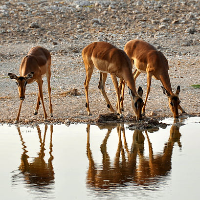
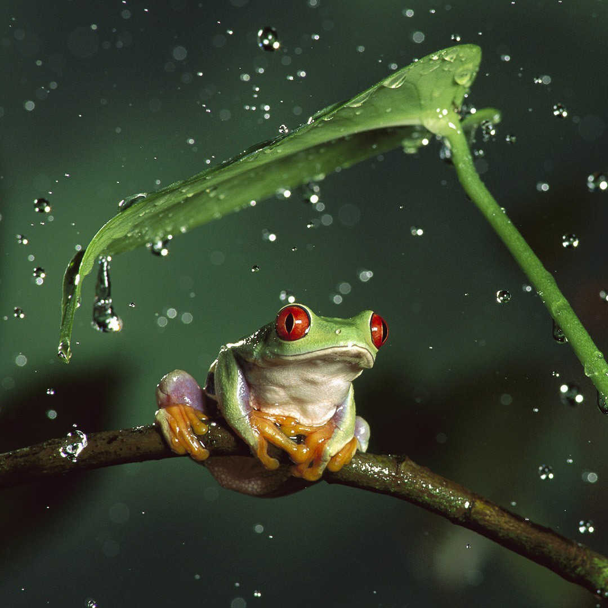
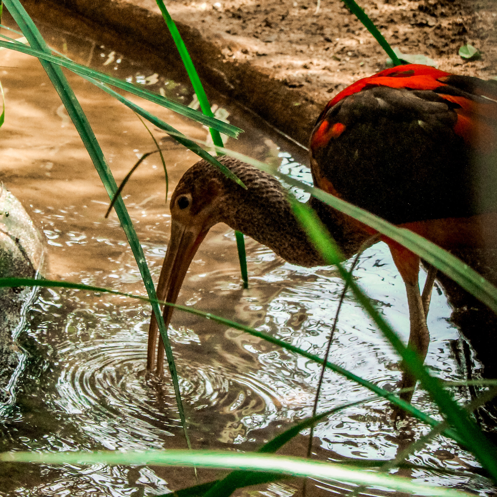
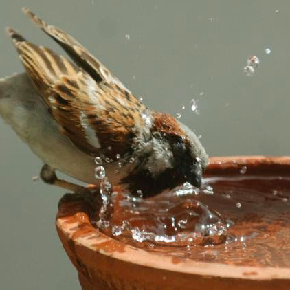
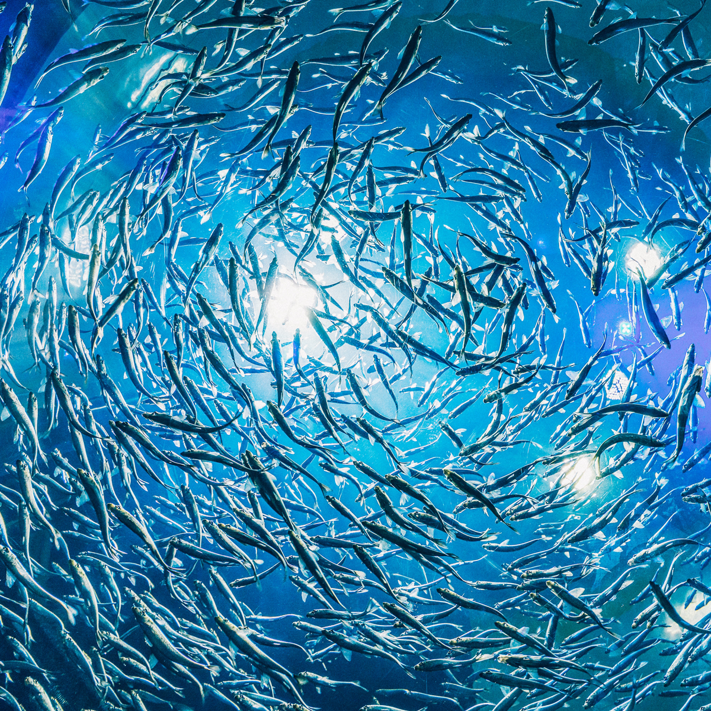
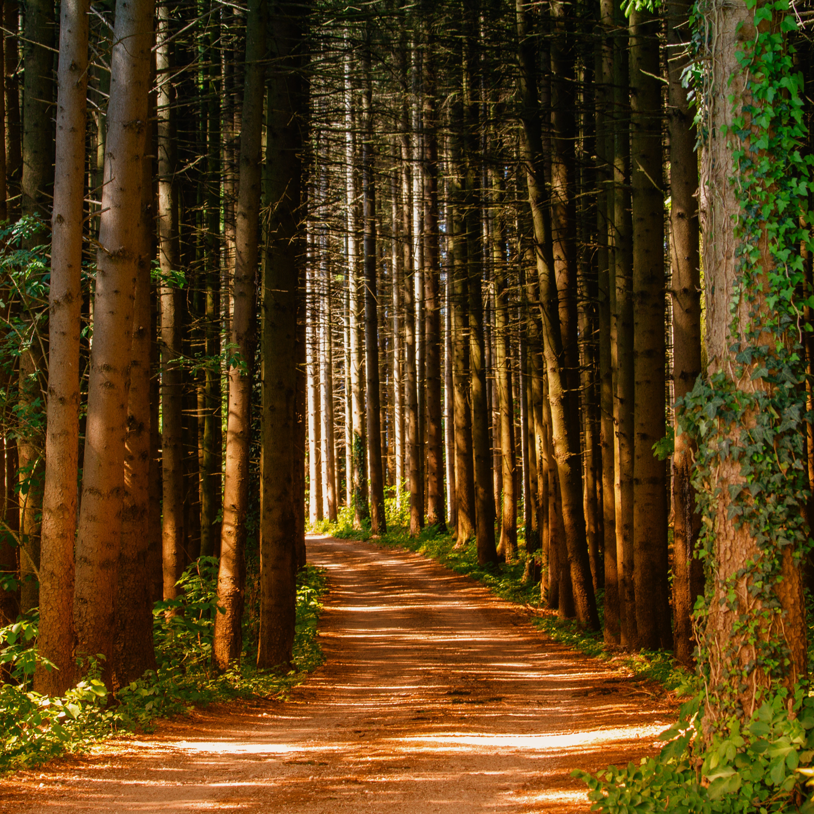

The Value of Water
Water is very important to each and every one of us.
Click on the buttons bellow to find out the details!

Uses of water
In our daily lives, there are many things that clearly use water.
Take a look through this slide show. Are there any items inside that surprise you?

How water sustains nature
Click the Animals and Plants to see how they interact with Nature everyday!







